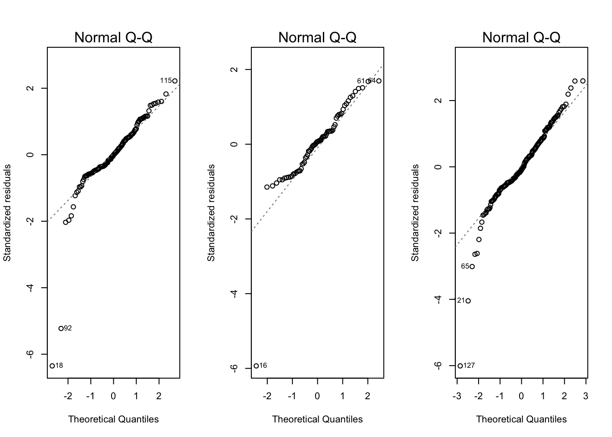
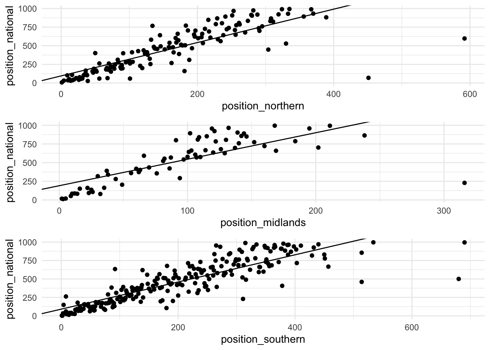

Area Results
Download the results from Power of ten for northern, midlands, southern and national.
A linear model
The goal is to fit a model, where the outcome is the position at the national and the input is the position at the northern XC. This then allows us to determine the quality of the field at each XC and determine what position you are likely to finish in the National this season given a result in the area championships. A simple linear model has each observation (runner) considered independent with normally distributed errors.
\[Y_i = \beta^T x_i + \varepsilon_i, \quad \mathcal{N}(0, \sigma^2).\]
Three separate models are fit, one for each area championship under consideration. To construct the dataset for each of the models we join the results together from the area and nationals in 2018 by name and exclude those who didn’t participate in both. We fit the model using least squares and see that the coefficient associated with the finishing position in the northerns is 2.23 and the intercept is 95. This means that given your finishing position in the Northern XC, just add 95 and multiple by 2.23 to get an approximate finishing position in the 2018 National XC.
| term | estimate | std.error | statistic | p.value |
|---|---|---|---|---|
| (Intercept) | 95.1 | 25.2 | 3.8 | 0 |
| position_northern | 2.2 | 0.1 | 17.1 | 0 |
Next we plot a Normal Q-Q plot to check the residuals are Normally distributed. If the residuals (the errors, \(Y_i - \varepsilon_i, i = 1,\dots,N\)) are Normally distributed the conclusions drawn from the model are valid. The Q-Q plots look reasonable (except maybe the midlands (centre)) with only a few outliers identified by R.

Next we can plot the actual values and the “line of best fit”. This is the regression line given by the data, we can see this generally captures the relationship quite well.

Looking at the line of best fit, the data appears to be linear, however exceptional performances in both competitions are not accurately modelled.
The coefficients for the midlands and the southerns simple linear regression are as follows:
| term | estimate | std.error | statistic | p.value |
|---|---|---|---|---|
| (Intercept) | 190.8 | 45.5 | 4.2 | 0 |
| position_midlands | 3.6 | 0.4 | 8.9 | 0 |
| term | estimate | std.error | statistic | p.value |
|---|---|---|---|---|
| (Intercept) | 90.3 | 17.5 | 5.2 | 0 |
| position_southern | 1.8 | 0.1 | 25.6 | 0 |
Predict 2019 National placing using the linear model
Now we’d like to use this data in order to predict a performance in 2019. I ran in the Northern XC, finished 289th. The linear model predicts a mean finishing position of 742, given by the equation:
\[\textrm{finish_nationals} = 95 + 2.239 * 289\]
1
742.3531 My actual finishing position was 904.
Citation
@online{law2019,
author = {Jonny Law},
title = {A {Statistical} {Model} for {Finishing} {Positions} at the
{National} {Cross} {Country}},
date = {2019-02-22},
langid = {en}
}